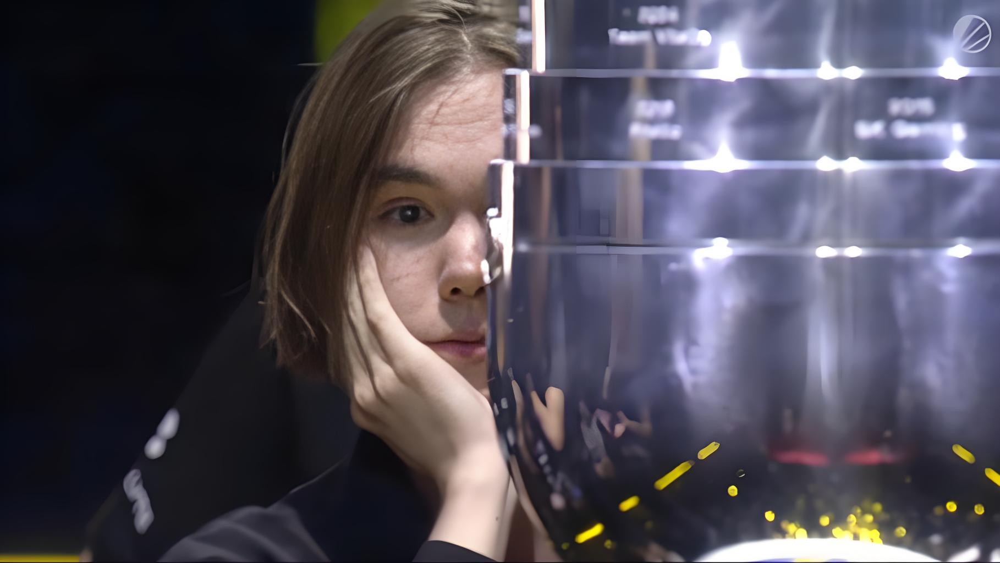
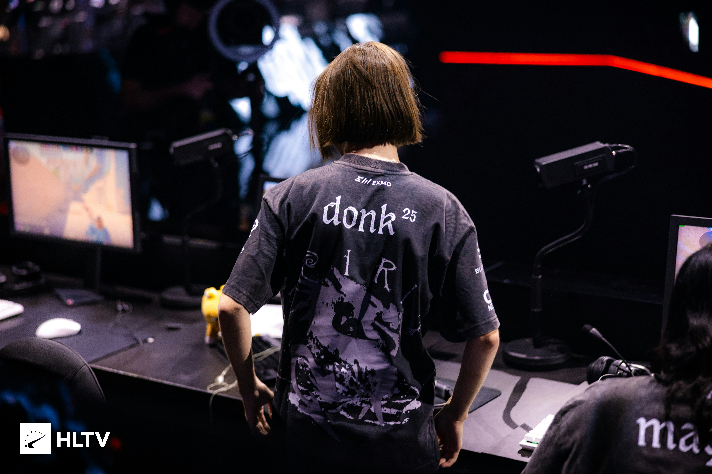
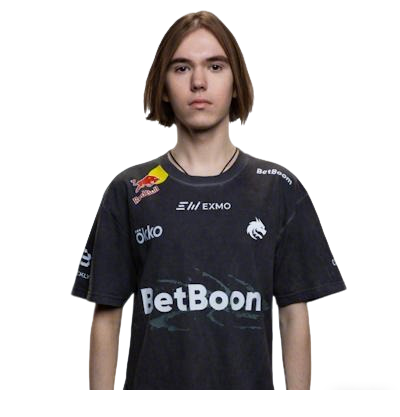
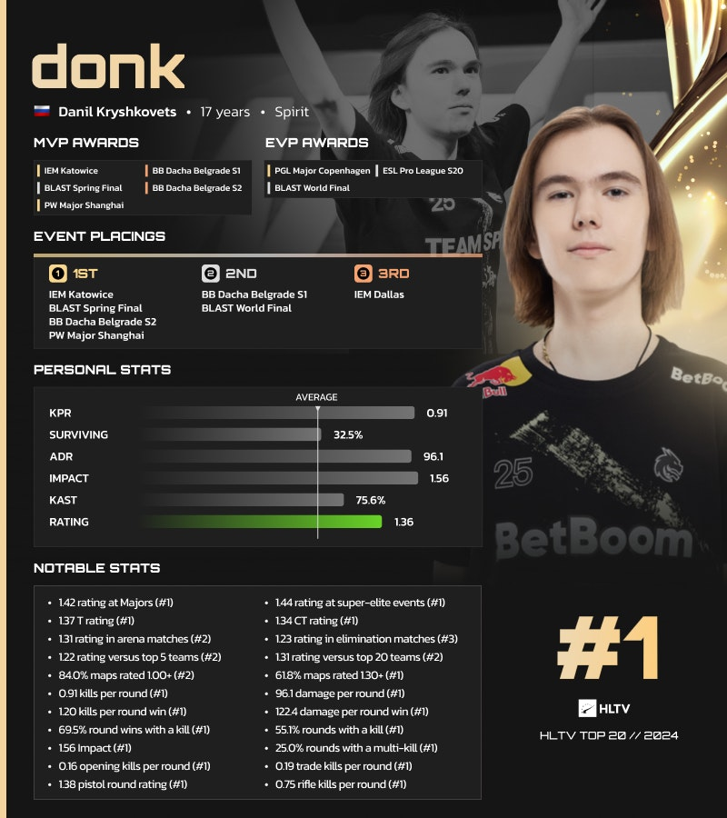
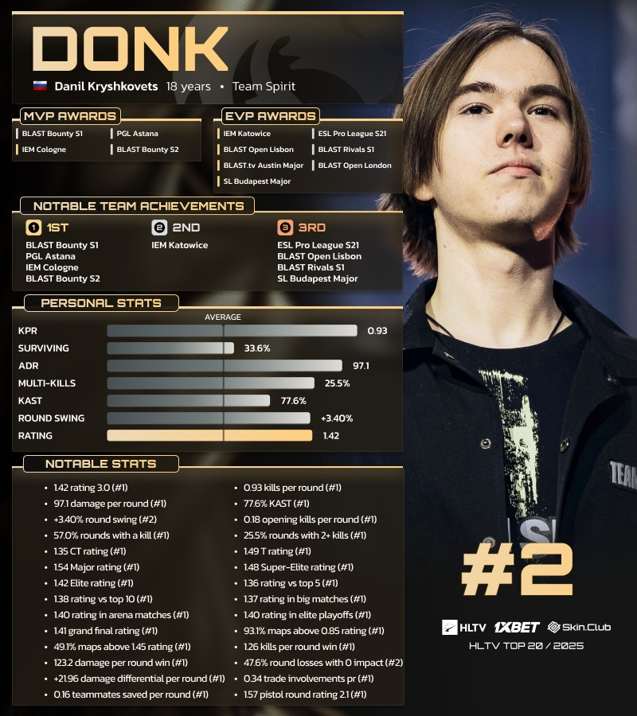

2024上海major冠军
出道即巅峰

Spirit新王登基
Donk获得MVP

传奇诞生
17岁天才少年的横空出世

出道即巅峰
Donk获得MVP

17岁天才少年的横空出世

Donk(丹尼尔·克雷什科维茨,2007年1月25日—),俄罗斯反恐精英2游戏职业选手,现效力于Team Spirit。
他于2024年被HLTV评为“年度最佳选手”,于2025年被HLTV评为年度第二选手。
Donk自5岁起接触《反恐精英1.6》，7岁开始游玩《反恐精英:全球攻势》。2021年，14岁的他加入Team Spirit青训体系。
2023年下半年，Donk升入Team Spirit一线队。2024年2月，他在个人首场顶级线下赛事IEM卡托维兹2024中率队夺冠，并以1.70的赛事Rating荣获HLTV MVP。同年，他随队参加PGL哥本哈根Major 2024，最终止步八强。凭借全年1.36的平均Rating，他在HLTV年度排名中位列第一，并获“最佳破局者”称号。
Donk随Team Spirit晋级IEM卡托维兹2025决赛，但以0-3负于Team Vitality，获得亚军。
奥斯汀特级锦标赛被MOUZ淘汰后，Team Spirit在IEM科隆2025中夺冠，并在总决赛中以3-0击败MOUZ。
之后，其又在BLAST Bounty第二赛季总决赛中击败The MongolZ，Donk也获得他职业生涯的第十座HLTV MVP奖杯。

2024年TOP1

2025年TOP2